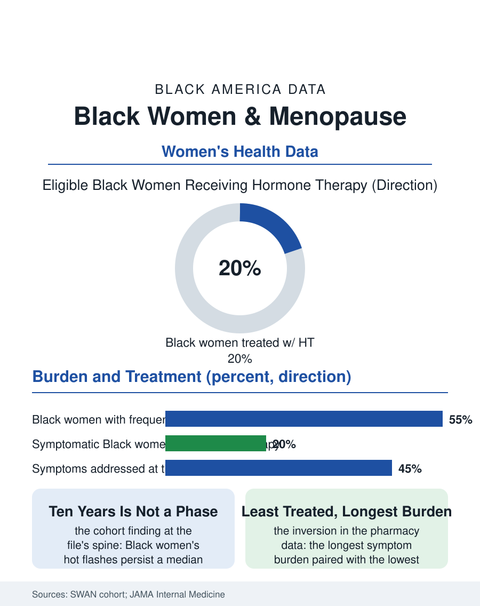

Black Public Health
Ten Years Is Not a Phase: Black Women and Menopause
Black women's menopause starts earlier, burns longer, and is treated least, a decade of symptoms the clinical system files as a phase. The menopause file.

Menopause arrives for Black women earlier, lasts longer in its most disruptive symptom, and is treated less at every point in the clinical record. The landmark Study of Women's Health Across the Nation, which has followed a multiethnic cohort through the transition for decades, gives this file its data spine: vasomotor symptoms, the hot flashes and night sweats that define the transition's burden, persist for Black women years longer on average than for white women, while hormone therapy, the effective treatment, reaches them at the lowest rates. This article reads the menopause file.
Earlier, Longer, Hotter
The SWAN cohort's numbers are unusually precise for this atlas. The median duration of frequent hot flashes measures around seven years for the cohort overall and beyond ten for Black women, the longest of the groups studied, with symptoms beginning earlier in the transition as well, so that the total burden, years of broken sleep and public discomfort, is roughly double the experience the culture treats as standard. The physiology file adds the compounding: the transition accelerates cardiovascular and bone changes, blood pressure and lipids shifting as estrogen falls, in a population entering the change with the hypertension file's heaviest baseline, so the menopause decade is a cardiovascular hinge the clinical system should be watching with both eyes and mostly watches with neither. Surgical menopause writes a distinct Black chapter: hysterectomy rates, driven historically by the fibroid file, have brought surgical menopause earlier to a disproportionate share of Black women, with the ovaries' removal or failure deciding the transition's timing medically rather than hormonally, and the long-term outcome data on early estrogen loss, heart, bone, and cognition, apply to that population with a force the research has only recently begun to measure separately.
The Treatment Gap's History
Hormone therapy's modern history is a study in a message revised: prescribed widely, then abandoned wholesale after a major trial's alarming first reports, then rehabilitated by the finer analyses showing the risk calculus depends on age and timing, a whiplash that reached Black women last at every stage. They were least likely to be offered therapy in the prescribing era, most likely to have the post-trial fear reinforced without the later nuance, and in the current era of careful re-prescribing, they appear in the pharmacy data at the lowest usage rates despite the longest symptom burden, the file's defining inversion. The clinical encounter data locate the mechanism in the appointment's minutes: menopausal symptoms raised by Black patients are documented as addressed less often, the concerns attributed to stress or weight, the sleep loss to everything but its cause, in the pattern of dismissal this atlas has recorded from endometriosis to PCOS, the women's health files' recurring signature. The non-hormonal alternatives, the newer targeted drug for hot flashes among them, arrive into the same distribution machinery, priced and prior-authorized through the pharmacy file's gates. The workplace dimension is the file's newest column: the transition's peak years coincide with senior career years, and the accommodation conversation, temperature, flexibility, the sick day for the sleepless night, is only beginning in the employment data, led by the women now senior enough to insist on it.
The Second Half's Opening
The menopause file's framing matters because the transition is not an ending in the data but a hinge: the decades after it are when the cardiovascular, bone, and cognitive files will be decided, and the clinical opportunity of the transition, a motivated patient in regular contact whose risk profile is actively changing, is among the most squandered in preventive medicine. The practitioners who specialize in it remain scarce, the menopause-certified clinician directories show the specialty's thin map, and Black women physicians, a small share of the OB-GYN workforce's senior ranks, carry panels where the conversation is likeliest to be held whole. The cultural conversation is shifting underneath the clinical one: the generation of Black women now in the transition is the most educated and publicly voiced in history, and its books, podcasts, and conferences have built the lay information economy that the clinic visit's fifteen minutes never supplied, with the measurable effect, in the newest survey data, of patients arriving with the vocabulary and the request already formed. The menopause file closes on the SWAN numbers once more: ten years of symptoms is not a phase, it is a decade of a life, and the file's demand is proportionate, a decade of sleep and steadiness treated with the seriousness the system affords a decade of anything else. The data have been sitting in the cohort for twenty years. The women have been sitting in the waiting room with them.
More in Black Public Health
Hypertension Among Black Adults: Prevalence, Control, and Consequences
About 55 percent of Black adults have hypertension — the highest rate of any U.S. group. Prevalence, onset, control, and the stroke, heart, and kidney consequences in the data.
Diabetes Among Black Adults: Prevalence and Complications
Nearly one in five Black adults has diabetes, diagnosed or undiagnosed — and its complications fall with particular weight. The CDC data on prevalence, control, and outcomes.
Black Life Expectancy: The Gap at Birth and Its Causes
Black life expectancy at birth is about 73 years, roughly five years below the national figure — the summary measure of every health gap in this section. The CDC data.
Source: Study of Women's Health Across the Nation (SWAN) cohort reports; North American Menopause Society data; JAMA Internal Medicine analyses.